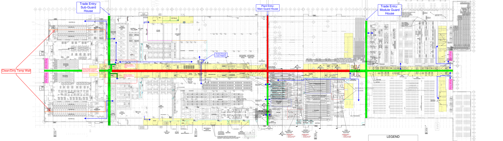

BlueOval Glendale - Ground Floor
Visitor-safe guided routing
-
Reset
+
Fit Route
Construction Trade Access
Plant Personnel Only
Active Route
Mouse wheel = zoom
Drag = pan
Labels
Network

Destination Intel
Select a destination
Click a point, search, or generate a route.
ACCESS STATUS